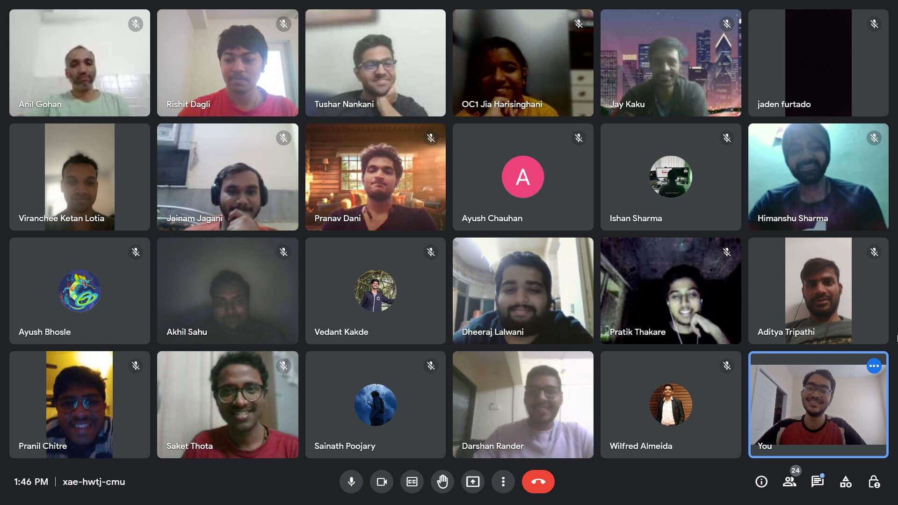
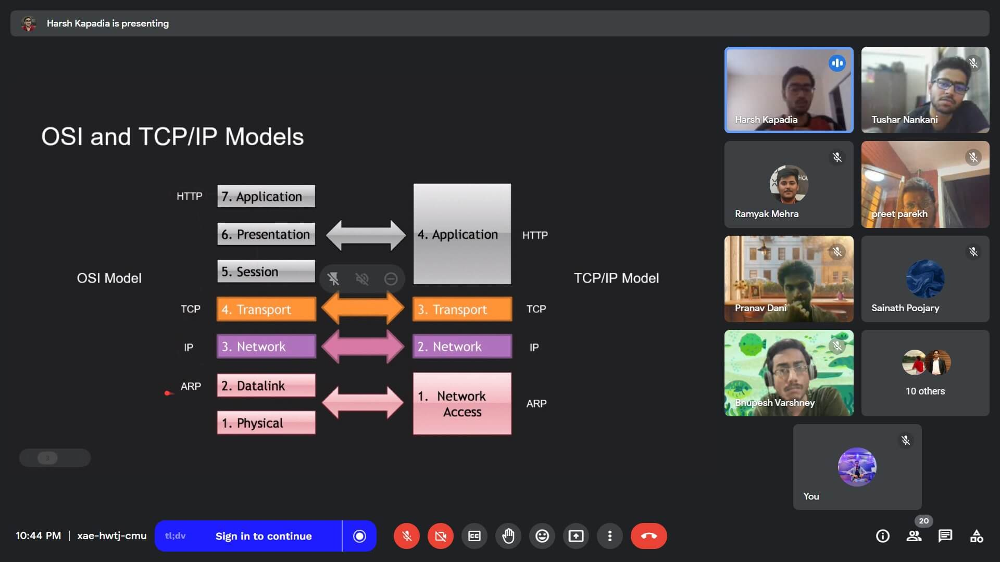
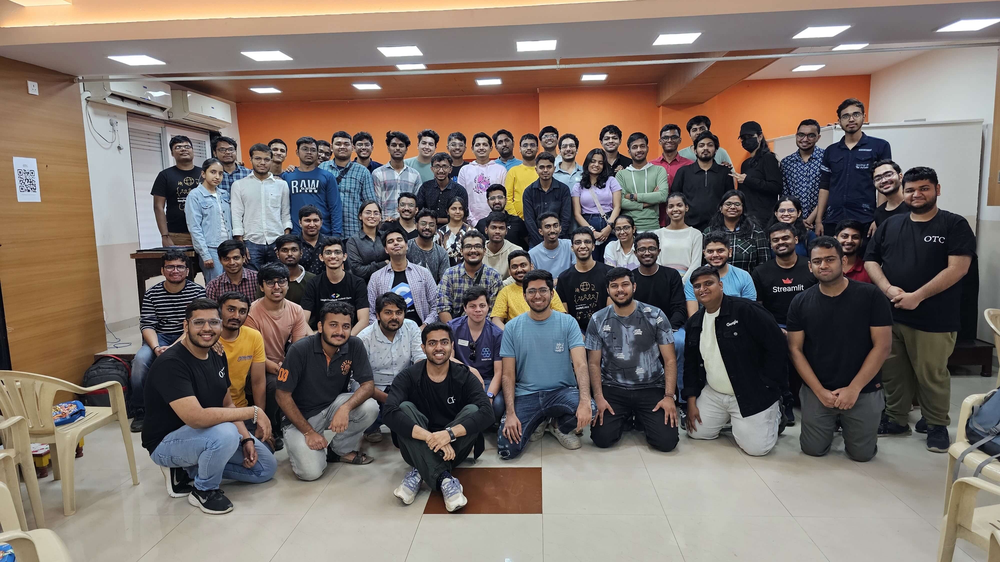
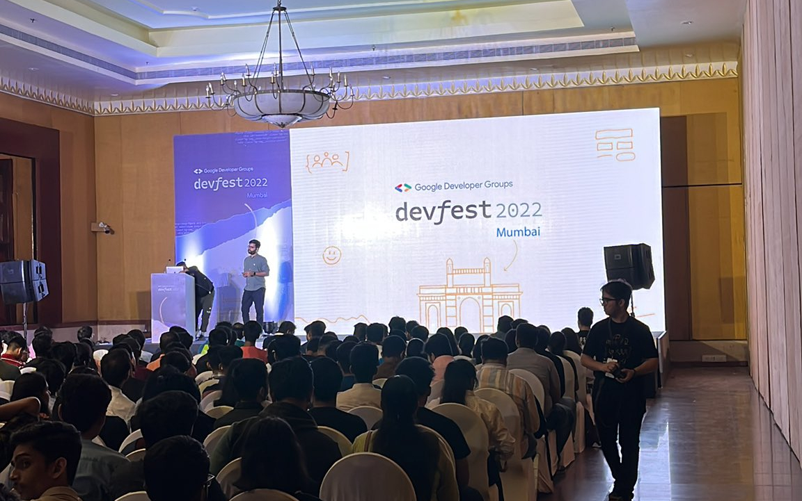

24th January 2026
Dear members,
It gives us immense pride and joy to announce that Our Tech Community has completed six years since its inception! OTC's events are open to all, and we aim to provide sound technical learning and foster genuine connections between people.
This letter is a recap of some of our events over the last six years, our incredible team and our future plans.
Notable Events
-
OTC CatchUp
- These are weekly informal online Tech discussions with project showcases and technical debates.
- We've conducted 272 sessions till date, which translates to conducting these sessions weekly for over five years without a break!
- We also diligently maintain summaries for each session.
- Attend a session!

-
OTC Talks
- These are 15 to 60 minute online technical talks.
- We've held ten such talks till date.
- Feel free to fill the CFP to give a talk and do share it with people who you think might be interested! Any experience level is welcome!

-
OTC MeetUp
- These are in-person Tech meetups to learn through technical talks and conversations.
- We've conducted five in-person meetups till date, with around 50 to 70 attendees per event!
- We would like to thank Preet Parekh and the Devfolio team for their support for all the meetups.
- Slide decks, pictures and more details

-
Collaborations
- We've also had a lot of collaborations with other technical communities.
-
Notable collaborations:
- DevFest Mumbai 2022, 2023 and 2025 in-person with GDG MAD and several other communities in Mumbai
- Technical Writing Meetup (May 2025) in-person with The Writers' Room BLR
- We helped organise Women's Day Mumbai 2023 in-person with over 20 technical communities in Mumbai.
- We conducted multiple online Hacktoberfest 2021 workshops with GDSC TSEC and TSEC CodeCell.
- We're always open for collaborations, so feel free to reach out to us!

- More details regarding our events can be found at events.ourtech.community.
Message to Members
Thank you so much for your time, knowledge, experience and support over the years! We all have collectively helped each other learn and be better, and that makes us immensely proud. A lot of members of the community have formed genuine bonds with each other as well.
We feel so grateful to realise that we have an atmosphere in OTC where we want each other to progress and have each other's backs — especially when things aren't going well. Also, everyone shares information and knowledge freely, rather than gatekeeping it.
These things, we believe, are the strengths of Our Tech Community and what indeed make it our tech community.
The OTC Team
Consistent collaborative efforts from the team is what keeps OTC running smoothly. The seven-person OTC team currently consists of Harsh Kapadia, Darshan Rander, Kartik Soneji, Pranav Dani, Ankush Kapoor, Alpesh Bhagwatkar and Ayush More.
Our team has people who step up and take the responsibility of owning tasks and getting things done. Apart from our weekly tasks, we hold a monthly meet to discuss our plans for the upcoming months and figure out how we can improve ourselves and OTC. Communication and task ownership were two areas that we greatly improved upon in 2025.
The OTC team is grateful to have each other and appreciates the time and effort that each member puts in, and the flexibility that each member displays to get things done in cases where no one else is available.
We would also like to acknowledge the contributions of our past team members Dheeraj Lalwani, Tushar Nankani, Uma Iyer, Mohit Shetty and Advait Jadhav.
Future Plans
-
OTC Talks
- We plan to keep conducting one talk a month, with the aim of reaching a two talks per month frequency by the end of 2026.
-
We're looking at OTC Talks as the future of OTC, so
we need to:
- Build a reputation of consistent and quality talks
- Publicize the talks better
- We wanted to get more people from the USA involved in OTC Talks as attendees and speakers.
- Harsh Kapadia, Darshan Rander and Pranav Dani will be managing OTC Talks.
-
If anyone is interested in giving a talk, please
fill the
OTC Talks CFP.
- Any experience level is welcome!
- Past talks
-
We intend to continue our efforts towards OTC CatchUp and
collaborations as per usual, without any changes.
- Ankush Kapoor, Alpesh Bhagwatkar and Ayush More will continue managing OTC CatchUp sessions.
Our Ask
- Ask your friends to join OTC's events! We're sure they will enjoy and learn a lot!
- Pass on the OTC Talks CFP to anyone you think would be interested in giving a Tech talk.
Thank you!
Regards,
The OTC Team